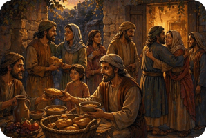

John describes love not as an emotion or feeling, but as obedience to the commandments of God. Jesus reiterated the importance of the commandments, especially the “first and greatest commandment,” love for God (Deuteronomy 6 : 5), and the second, love for one another (Matthew 22 : 37 – 40; Leviticus 19 : 18). Far from abolishing the Old Testament law of God, Jesus came to fulfill it by providing the means of its fulfillment in Himself.
The Book of 2nd John is addressed to "the chosen lady and her children." This could either have been a lady of important standing in the church or a code which refers to the local church and its congregation. In those days when Christians were being persecuted such coded salutations were often used.
The Book of 2nd John is largely concerned with an urgent warning concerning deceivers who were not teaching the exact doctrine of Christ and who maintained that Jesus did not actually come in the flesh. Such a teaching denies Jesus’ humanity. John is very anxious that true believers should be aware of these false teachers and have nothing to do with them.
The Book of 2nd John is an urgent plea that the readers of John’s letter should show their love for God and His Son, Jesus, by obeying the commandment to love each other and live their lives in obedience to the Scriptures. The Book of 2nd John is also a strong warning to be on the lookout for deceivers who were going about denying the Incarnation, saying that Christ had not actually come in the flesh.
Summary of the Book of 2nd John from GotQuestions.org — is a popular Christian website and "parachurch" ministry that provides answers to a vast array of questions about the Bible, theology, and spiritual life.
Do you have a question? Submit your Bible Questions to GotQuestions.org No need to sign up, just use your email to receive notifications from any answers. Also browse their website for many questions that may answer your questions.
For personal questions, always pray first to God and seek answers through deep prayers. That may answer deep questions in your heart, and mind, as only God, Holy Spirit and Jesus can see through and through on your feelings, thoughts and situation, better than any man can.